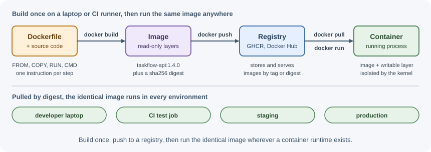

Docker¶
Docker packages an application together with everything it needs to run (a runtime such as Node.js, system libraries, configuration defaults, and the code itself) into an image, and runs that image as an isolated process called a container. Containers share the host's Linux kernel, so they start in milliseconds to seconds and use far less memory than virtual machines, while still giving each application its own filesystem, network, and process view. The same image runs unchanged on a laptop, in CI, and in production, which is why containers became the standard unit of deployment.
What Docker provides¶
- A reproducible package: an image built from a
Dockerfilecontains the exact runtime, libraries, and dependency versions, so "works on my machine" becomes "works in this image". - Isolation without a full VM: Linux namespaces give each container its own process tree, network stack, and filesystem; cgroups cap its CPU and memory.
- Fast, cached builds: images are stacks of layers, and unchanged layers are reused between builds and shared between images.
- Distribution: registries such as Docker Hub and GitHub Container Registry store images by name, tag, and content digest.
- Local environments: Docker Compose starts an application with its database, cache, and tools from one file.
- A common format: Docker images follow the Open Container Initiative (OCI) specifications, so Kubernetes, cloud container services, and other runtimes can run them.
Containers also add responsibilities: keeping images small and patched, running as a non-root user, handling shutdown signals correctly, and never baking secrets into image layers.
How a typical Docker workflow works¶
- A developer writes a
Dockerfiledescribing how to build the image: the base image, the files to copy, the commands to run, and the start command. docker buildsends the build context to BuildKit, which executes each instruction, caches every resulting layer, and produces an image.- The image is tagged, for example
ghcr.io/example/taskflow-api:1.4.0, and identified by an immutable content digest (sha256:...). docker pushuploads only the layers the registry does not already have.- A server (or Kubernetes node) pulls the image and
docker runcreates a container: the read-only image layers plus a thin writable layer, started as an isolated process. - The same image is promoted from CI to staging to production, so what was tested is exactly what runs.

Practical example¶
A minimal image for the TaskFlow API (an Express + MongoDB service):
# Dockerfile
FROM node:24-slim
WORKDIR /app
COPY package.json package-lock.json ./
RUN npm ci --omit=dev
COPY src ./src
USER node
EXPOSE 3000
CMD ["node", "src/server.js"]
# Build, run, and check the container
docker build -t taskflow-api:dev .
# host.docker.internal reaches MongoDB on your machine with Docker Desktop;
# on Linux, also pass --add-host=host.docker.internal:host-gateway
docker run -d --name taskflow-api -p 3000:3000 \
-e MONGODB_URI="mongodb://host.docker.internal:27017/taskflow" \
taskflow-api:dev
docker logs -f taskflow-api
curl http://localhost:3000/healthz
Copying the lockfile and installing dependencies before copying the
source means a code change reuses the cached npm ci layer, so rebuilds
take seconds. USER node runs the process as the unprivileged user that
the official Node.js images provide. The
production Dockerfiles lesson
turns this into a multi-stage build with health checks and graceful
shutdown.
Docker topic map¶
Foundations
Local development
Running containers safely
Review
Developer perspective and common misconceptions¶
Treat the image as the release artifact: build it once in CI, tag it with
the commit SHA, scan it, and promote that exact image through every
environment. Keep configuration and secrets outside the image (environment
variables, mounted files, a secret manager), keep the image small, and make
the process handle SIGTERM so deploys do not drop requests.
- A container is not a lightweight VM. It is a normal Linux process with restricted views of the system; it shares the host kernel.
- Containers are not secure by default just because they are isolated. A root process with extra capabilities or the Docker socket mounted can take over the host.
- Data written inside a container's filesystem disappears when the container is removed. Persistent data belongs in volumes or a managed database.
latestis just a tag name, not "the newest version", and it can point to different images over time.- Docker is not required to run containers in production: Kubernetes uses containerd or CRI-O directly, and they run the same OCI images.